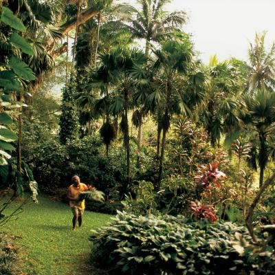
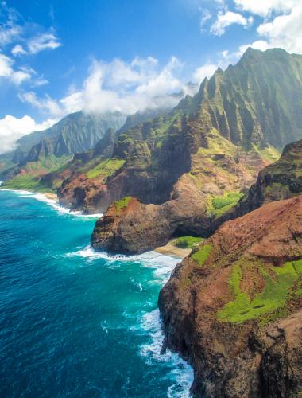
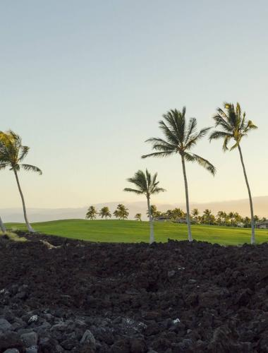
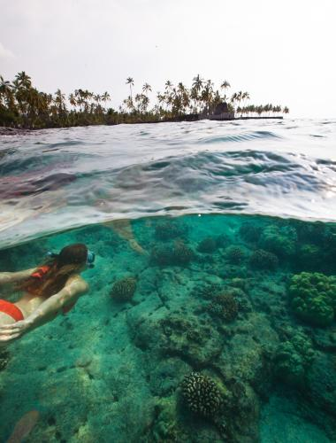
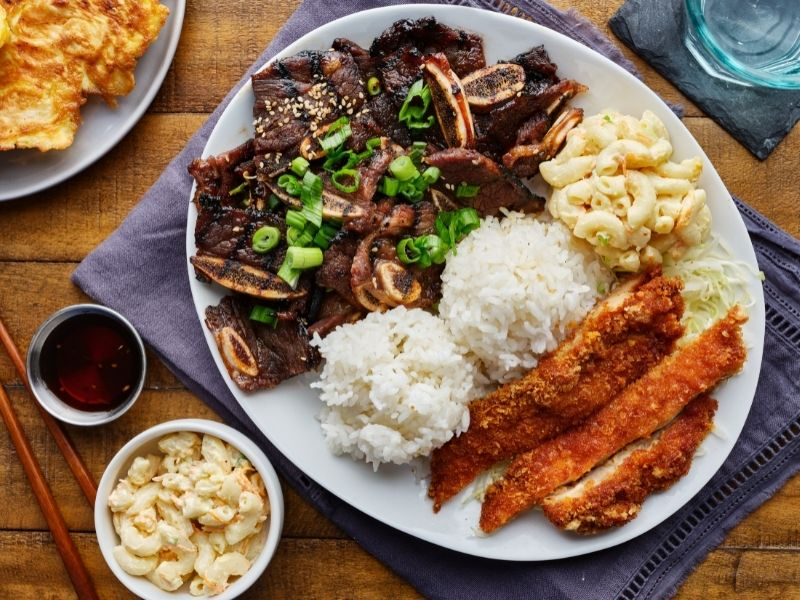

THINGS TO DO
1. Eco tourism
For travelers interested in eco- tourism experiences,there are a variety of farm and agriculture tours,botanical gardens and more that showcase the island unique environments. Take a farm tour in beautiful green hanalei taro fields to see how kalo ,an important hawaiian root starch,is cultivated.
2. Family fun

From snorkeling and sandcastle building on sun-soaked beaches to exploring aquariums and fishponds,there seemingly endless ways to connect with the family in the hawaiian Islands.Hawaii is literally swimming with water-based activities.Kids can pet a sea lion at Sea Life Park.
3. Sightseeing
Keep your camera ready :In Hawaii breathtaking sights await you around every turn.Here ,just about every byway is scenic,and each overlook offers a new Instagram-ready vista.
4. Golf
With breathtaking scenery,one-of-a-kind signature holes and championship-caliber course designs,Hawaii attracts golfers of every level from around the world.
5. Adventure
Hawaii's beautiful beaches are only the beginning.From surfing the gentle waves of Waikiki Beach to snorkeling with manta rays on the Kona Coast,there's never a dull moment in the Hawaiian Island.
6. Cuisines
The cuisine of Hawaii incorporates five distinct styles of food,reflecting the diverse food history of settlement and immigration in the Hawaiian Island.In the pre-contact period of Ancient Hawaii,Polynesian voyagers brought plants and animals to the islands.